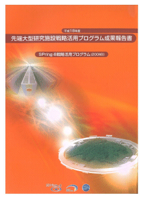
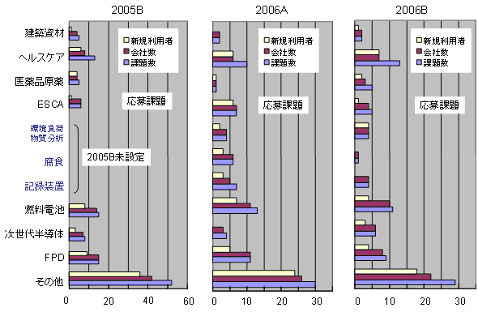
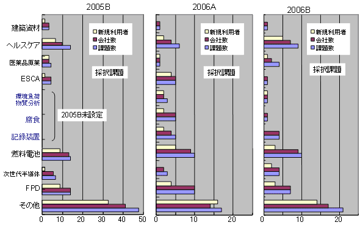
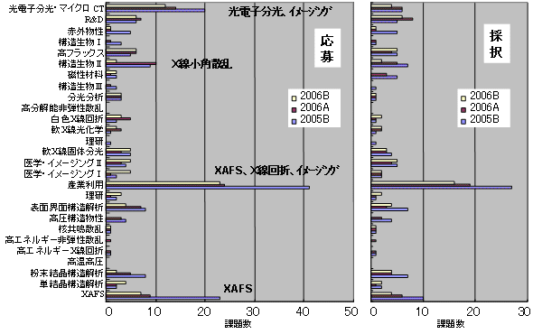
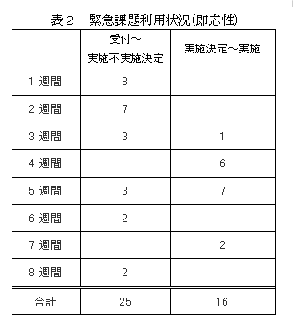
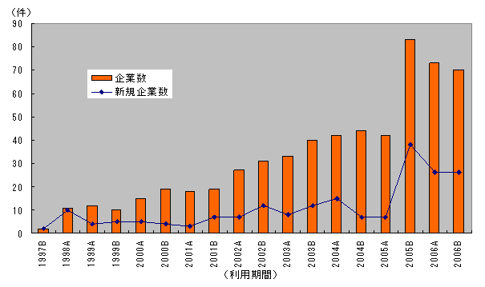
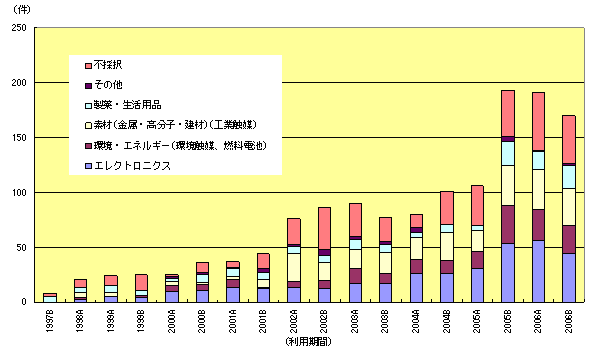

1. 概要2. 公募の内容
3. 成果公開の考え方
4. 実施の経緯
5. 結果
6. 施策の波及効果
7. 課題利用報告書
* 送付を希望される方は、連絡先（氏名、所属、〒住所、E-mail）をご記入の上、 事務局 support@spring8.or.jp までE-mailでご連絡ください。
大型放射光施設SPring-8では、昨年（平成17年度）より、
（財）高輝度光科学研究センター（JASRI）において、我が国が有する最先端の大型研究施設について、
その汎用性にふさわしい広範な利用者・領域により、施設の能力を最大限に引き出すような質の高い研究開発を実施し、
新技術・新産業を創出していくために、戦略的な活用を推進する事を目的にして、
先端大型研究施設戦略活用プログラムを実施している。
昨年と同様、平成18年度も「SPring-8」と「地球シミュレータ」を活用するプログラムで、
これらの施設については新規利用者・新領域の拡大が必要で、
とりわけ産業界の利用者拡大を進めることが緊急の課題と考えられるため、利用促進を図るものである。
- SPring-8戦略活用プログラム
世界最高性能の大型放射光施設「SPring-8」を利用して、 文部科学省が策定する戦略に沿った利用の拡大を図るプログラムである。 新たな利用者による利用を円滑化するために、研究を支援する研究技術員を配置するとともに、 利用者の研究計画に関する相談を受け、助言を行うコーディネーターを配置する。 - 地球シミュレータ戦略活用プログラム
世界最高性能の超高速並列計算機システム「地球シミュレータ」を利用して、 文部科学省が策定する戦略に沿った利用の拡大を図るプログラムである。新たな利用者による利用を円滑化するために、 地球シミュレータの利用を技術的に支援するシミュレーション技術支援要員を配置する。 - SPring-8及び地球シミュレータ戦略活用プログラム
SPring-8と地球シミュレータの両方を利用することにより、 創造的な研究開発の推進や高度な研究成果を目指すプログラムである。
平成18年度下半期では70課題程度の採択を予定した。
このうち、産業界による利用課題を9割程度、大学・公的研究機関による利用課題を１割程度、採択する予定で進めた。
本プログラムで募集する課題は「新規利用者による研究」、
「新領域研究」と「重点領域研究」に大別され、「新規利用者による研究」、
「新領域研究」、「重点領域研究」の順に、より高い優先度を置いている。
「新規利用者による研究」とは、これまでSPring-8を利用したことのない利用者、
所属企業による研究を指している（但し、事業規模が相当程度大きく事業範囲が多岐に及ぶ企業で、
これらの企業関係利用者を一律に取り扱うことに支障がある場合は、既利用企業からの利用も認める）。
「新領域研究」とは、これまでSPring-8で実施されたことがない領域の研究、
又は近年開発された新手法を用いることによって可能になった新しい段階の研究を指している
（例：コンクリート等建築資材関連、ヘルスケア関連、医薬品原薬関連、
高エネルギーESCA（電子分光法）によるデバイス開発など）。
「重点領域研究」とは、経済社会的ニーズが極めて高く、
向こう10年間に我が国の国際競争力に大きな影響を与え得る分野で、国として重点的に進めるべき研究であり、
従来の利用研究課題とは領域やフェーズが異なり新規性をも有するものを指し、
具体的には燃料電池、次世代半導体、フラットパネルディスプレイ（以下「FPD」という。）の3領域を指している。
また、このプログラムの一環として、SPring-8の優れた分析装置としての性格を活用することを目的として、
即応性を必要とする課題について、「緊急実施型利用」を実施している。
本プログラムにおいてSPring-8を利用して得られた成果は、 所定の利用報告書にまとめて提出される。この利用報告書は公開とするが、 他の一般課題等とは異なり、利用者は利用報告書とともに「利用報告書公開日延期申請書」を提出することにより、 施設運用機関との協議を通じて、特許出願・特許取得等に必要な準備期間（2年間程度）として 利用報告書の公開日を延期することが出来るのが特徴である。
- 重点領域の指定
「重点領域推進委員会」にて、先端大型研究施設戦略活用プログラムを政策的に推進すべき分野として、 「重点産業利用」が領域指定された。SPring-8戦略活用プログラム課題は、領域指定型の重点研究課題（公募）として扱われる。 - 課題選定
採択課題の選定は、学識経験者、産業界等の有識者から構成される 「SPring-8戦略活用プログラム課題選定委員会」（以下「選定委員会」という。）により実施される。 選定委員会は、申請者から提出された申請書類等の内容について、文部科学省が設置する外部有識者から構成される 「先端大型研究施設戦略活用プログラムに関する検討会」（以下「検討会」という。）において示された方針に基づき、 評価を行い、本プログラムの趣旨に照らして優秀と認められる採択課題を選定する。
審査は非公開で行われるが、申請課題との利害関係者は当該課題の審査から排除される。 また、検討会および選定委員会の委員は、委員として取得した一切の情報を、 委員の職にある期間だけでなくその職を退いた後も第三者に漏洩しないこと、 情報を善良な管理者の注意義務をもって管理すること等の秘密保持を遵守することが義務付けられている。 - 審査の手順
審査は以下の手順により実施される。
- 形式審査
提出された申請書類について、応募の要件を満たしているかについて審査する。 なお、応募の要件を満たしていないものは、以降の審査の対象から除外される場合がある。 - 書類審査
選定委員会の下に設置する専門分野別の分科会（外部有識者で構成）により、書類審査を実施する。 - 最終審査
書類審査における評価を踏まえ、選定委員会において審査を実施し採択課題を決定する。
- 形式審査
- 審査の観点
審査（形式審査を除く）は以下の観点に重点を置いて実施される。- 科学技術における先端性を有すること
- 特許化、製品化等を通じて新技術、新産業創出に資すること
- 社会経済ニーズに合致すること
- 研究手段としてのSPring-8の必要性
- 実験内容の技術的な実施可能性
- 実験内容の安全性
- 利用者支援
コーディネーター、産業利用支援グループが主に中心となり、課題毎に担当者をおき、BL担当者の協力の下、 全所的に支援を実施した。支援の内容は、重点分野における実験環境の整備、 コーディネーター及びスタッフによる実験企画・準備、実験実施、実験解析に至る技術支援、 及び個々の実験に必要な経費などの財政支援からなる。 - 利用実験
利用実験期間の区切りは通常の年度分けとは少し異なるため、 本報告は平成18年下半期(2006B利用期：2006年9月～12月の期間）に実施された利用実験課題である。 - 報告
2007年9月11日～12日(予定)のSPring-8産業利用報告会の開催に合わせて、 平成18年(2006A期，2006B期)の先端大型研究施設戦略活用プログラムの成果報告を実施する予定である。 当日のプログラム等については後日SPring-8ホームページ上に掲載予定である。
- 応募・採択結果
採択/応募総数：69課題/98課題(採択率70％)
産業界：63課題/89課題 （採択率71％）
学・官：6課題/9課題 （採択率67％）
- 分類
表1 機関、領域別応募採択結果
注意1) 新規利用者と新領域・重点領域研究を各々別に分類しているため、重複している課題がある。分類 民間
採択数/応募数
（採択率）学官
採択数/応募数
（採択率）新規利用者（初回） 15/26（58％） 0 新規利用者（2回目） 13/18（56％） 2/2 新領域研究 21/34（62％） 4/5 重点領域研究 20/26（77％） 0/2 その他 21/29（72％） 0
注意2) 地球シミュレーターとの併用課題は、上期の継続1件が内数
- 産業界の新規利用者と企業数
採択された新規利用者（2回目を含む）：28課題/24社
（2006A：39課題/34社）
新規利用者（初回） ：15課題/12社（2006A：13課題/13社）
新規利用者（2回目） ：13課題/12社（2006A：26課題/21社）
産業界全体
採択 63課題/46社
応募 89課題/60社
- 産業界の動向
- 新規利用者
今回初めての産業界の新規応募課題は26課題であり、2006A期と同様に応募総数の25％と依然として高い割合を示している。 また、当該プログラムでは2回目まで新規利用者として優先的に採用する方針であり、 表1から新規利用者が続けて応募していることも容易に読み取ることができ、利用の有効性を示すものである。 また、新規参入企業数に目を向けると、10社以上/半年の水準を依然として維持している。 これは、産業界の新規参加を容易にする本施策がSPring-8への関心の高まりを旨く捉えていると同時に、 未だ利用していない企業が数多くあることを示しており、継続的な取り組みが望まれる。 - 新領域研究・重点領域研究
図1と図2に、本施策が開始された2005B期からの応募課題と採択課題の領域別産業界の課題推移を示す。

件数
図１ 領域別産業界応募課題
新領域では「ヘルスケア」、重点領域では「燃料電池」と「フラットパネルディスプレイ（FPD）」が多い。 これらの領域では施策に応じて新規企業がまとまって参画し、定着する傾向を示している。 一方、「その他」の分類も依然として多い。2005B期の「その他」分類から、 比較的まとまった三つの領域を2006A期から新領域として例示している。その結果、 「その他」分類が幾分減少したものの、依然として全体に占める割合は多い。このことは、 広範な産業分野から利用があることを示している。
件数
図２ 領域別産業界採択課題
- 技術分野
高エネルギー光電子分光、XAFS、イメージング、Ｘ線小角散乱に課題が集中し、 結果的に特定のビームラインに課題が集中する傾向は依然として変わらない（図3）。 これより、産業界の課題が特定の分析技術に大きく偏る状況は、ほぼ特定されたと言える。 集中する当該技術分野は必然的に他に比べて倍率が高くなっている。 2007B期共用開始に向けてXAFSビームラインを建設中ではあるものの、 他にも課題が集中する設備に対しては増設およびスループットの向上が今後の課題である。
図３ ビームライン別産業界応募・採択課題
- 新規利用者
- 緊急実施型利用状況

現行の2回／年の利用のサイクルが長いため、産業界のニーズに合わないとの要望が産業界から強く出ていた。 そのため、2005B期からの継続的な施策として、随時利用できる緊急実施型利用制度を設けて運用した。 受付は随時とし、当該施策に沿った基準に加えて緊急性を重視し、（財）高輝度光科学研究センターが実施を判断した。
2006B利用期で実施した結果は、11社10機関から25課題の申し込みがあり、16課題(8社6機関)が実施された。 実施課題の内訳は、新規利用者・新規事業が3課題および新領域が10課題、重点領域が3課題、 その他3課題である(なお、新規・新領域と重点領域とは別々に分類しているため重複している課題もある)。 受付から実施決定までに要した期間が2006A期に比べて比較的長期間のものもあるが、 これは、2006A期に比べて合計で2倍以上の緊急課題申し込みがあり、一旦不採択された課題に対しても留保して、 次の緊急枠に再挑戦する機会を与えたことに因る。また、実施決定から実施までに要した期間は、 依然として長いもので１ヶ月半を要し、実施までの期間の短縮化が今後の課題である(表２)。
- 利用報告書の公開日延期
2006B利用期で実施した課題（緊急実施型利用を含む）について、 利用報告書公開日延期申請が出された。内訳は次の通りである。- 公開日延長許可：13課題
理由内訳（複数回答有り）
- 知的財産権の取得のため：11課題
- 事業への適用のため：3課題(内、2課題はaと重複)
- その他の理由：1課題
- 公開日延長不許可：0件
- 公開日延長許可：13課題
図４は、民間企業の実験責任者が共用課題を実施した企業数の推移を半期毎に示したものである。 このグラフでは、同一企業が複数の課題を実施しても1社として数えている。また、折れ線グラフは、 その利用期に初めて課題を実施した新規企業数を示している (但し、当該施策の定義により2005B期～2006B期では2回目までを新規として数えている)。 2002年～2003年の増加は文部科学省により先行して実施されたトライアルユースの効果によるものである。 さらに、2005B期に始まる先端大型研究施設戦略活用プログラムが実施されたことで、 2005B期では突出した企業数の伸びを示し、新規企業の参入も著しい伸びを示している。 これは、トライアルユースにより利用実績の無い企業にも関心が高まっていた潜在ニーズが、 コーディネーターによる課題解決型の相談対応やコーディネーターと連携した技術支援スタッフの具体的な技術支援という 当該プログラムによって、一気に顕在化したものとして理解できる。 すなわち、産業利用拡大のためのビームタイム確保とコーディネーターと 支援要員の増員という当該プログラムが時宜を得た有効な施策であることを実証している。 また、図５は、民間企業の実験責任者が共用課題に応募した課題(不採択課題も含む)の分野別課題数を 半期毎の推移で示したものである。2005B利用期に始まる産業界の利用拡大を進めることを目的にした当該プログラムの 実施に呼応して突出した課題数は、2006A, 2006B期においても若干の減少はあるものの依然として、 その値を維持している(2005B利用期は、課題募集時期の関係から年間計画の実施が下期に集中した)。 さらに、申請しても採択されずに実施できない課題も多いが、ある面、適度な競争は成果の源泉として有効であり、 やむをえないものと考える。しかしながら、民間企業の多くが必要とする分析技術はXAFS、 光電子分光、Ｘ線回折、Ｘ線小角散乱、イメージングに集中しており、そのビームラインでは過度の競争が起きているため、 建設中のXAFSビームラインの他にも設備増設へ向けた検討も必要である。 また、今後、利用の多い重要な分析技術を中心に、選択と集中により利用の効率化と高機能化を進め、 新規利用者の拡大と並行して継続利用による成果創出に向けた取り組みも重要である。 なお、利用報告書の公開日延期に、13課題が許可されている。これらは知財取得や事業適用のための公開延期であり、 産業界総数63課題（＋10緊急実施）の約2割が事業につながる成果を表明している。 この制度は、産業界のニーズに即し、評価も高いが、一方、産業上の成果として把握できる利点もあり、継続が望ましい。

図４ 民間企業の実験責任者が共同課題を実施した企業数の推移
(2005B期の成果報告書では統計データの一部に誤りがありました)

図５ 民間企業における分野別の共用課題(不採択課題含)
(2006A期の成果報告書では統計データの一部に誤りがありました)
この成果報告書に掲載される課題利用報告書は、2006B利用期に実施された課題（緊急実施型課題利用を含む）のうち、 利用報告書公開日延期申請許可となったものは除いている。また、緊急実施型利用を行ったものについては、 タイトル末尾に（※）を記述している。